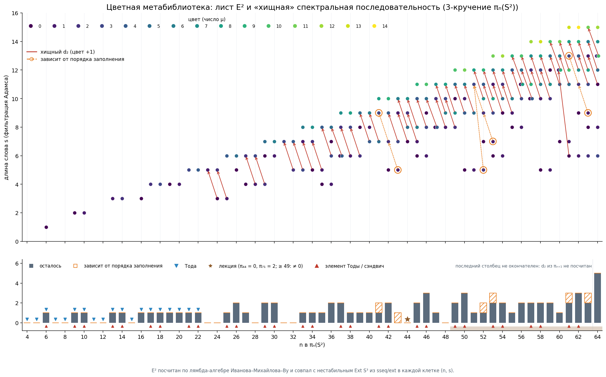

Классы E² по длине и цвету
Каждый класс записан как (s, c): $s$ — длина слова (фильтрация Адамса), $c$ — цвет (число букв $\mu$). Метабиблиотека посчитана перебором до $n=64$. «Осталось» — после хищного правила (цвет $+1$, «low»). В колонке «семейство» — класс, стоящий на месте элемента Тоды ($n=4k+2$) или сэндвича ($n=4m+1$). Цвета этих классов идут 3 4 4 5 5 6 …, как сказано в лекции.

| n | dim E² | классы (s, c) | осталось после правила | семейство (s, c) | Тода 2003 |
|---|---|---|---|---|---|
| 4 | 0 | 0 | |||
| 5 | 0 | 0 | |||
| 6 | 1 | (1,0) | (1,0) | (1, 0) | 1 |
| 7 | 0 | 0 | |||
| 8 | 0 | 0 | |||
| 9 | 1 | (2,0) | (2,0) | (2, 0) | 1 |
| 10 | 1 | (2,1) | (2,1) | (2, 1) | 1 |
| 11 | 0 | 0 | |||
| 12 | 0 | 0 | |||
| 13 | 1 | (3,1) | (3,1) | (3, 1) | 1 |
| 14 | 1 | (3,2) | (3,2) | (3, 2) | 1 |
| 15 | 0 | 0 | |||
| 16 | 1 | (3,0) | (3,0) | 1 | |
| 17 | 1 | (4,2) | (4,2) | (4, 2) | 1 |
| 18 | 1 | (4,3) | (4,3) | (4, 3) | 1 |
| 19 | 1 | (4,0) | (4,0) | 1 | |
| 20 | 1 | (4,1) | (4,1) | 1 | |
| 21 | 1 | (5,3) | (5,3) | (5, 3) | 1 |
| 22 | 1 | (5,4) | (5,4) | (5, 4) | 1 |
| 23 | 1 | (5,1) | 0 | ||
| 24 | 2 | (3,0) (5,2) | 0 | ||
| 25 | 2 | (3,1) (6,4) | (6,4) | (6, 4) | 1 |
| 26 | 2 | (5,0) (6,5) | (5,0) (6,5) | (6, 5) | 2 |
| 27 | 2 | (4,0) (6,2) | (4,0) | 1 | |
| 28 | 2 | (4,1) (6,3) | 0 | ||
| 29 | 3 | (4,2) (6,0) (7,5) | (6,0) (7,5) | (7, 5) | 2 |
| 30 | 2 | (6,1) (7,6) | (6,1) (7,6) | (7, 6) | 2 |
| 31 | 1 | (7,3) | 0 | ||
| 32 | 2 | (5,2) (7,4) | 0 | ||
| 33 | 3 | (5,3) (7,1) (8,6) | (8,6) | (8, 6) | 1 |
| 34 | 3 | (5,0) (7,2) (8,7) | (8,7) | (8, 7) | 1 |
| 35 | 3 | (4,0) (5,1) (8,4) | (4,0) | 1 | |
| 36 | 4 | (4,1) (6,3) (7,0) (8,5) | (4,1) (7,0) | 2 | |
| 37 | 4 | (6,0) (6,4) (8,2) (9,7) | (6,0) (9,7) | (9, 7) | 2 |
| 38 | 3 | (6,1) (8,3) (9,8) | (9,8) | (9, 8) | 1 |
| 39 | 3 | (6,2) (8,0) (9,5) | (8,0) | 1 | |
| 40 | 3 | (7,4) (8,1) (9,6) | (8,1) | 1 | |
| 41 | 3 | (7,5) (9,3) (10,8) | (10,8) | (10, 8) | 1 |
| 42 | 4 | (5,0) (7,2) (9,4) (10,9) | (5,0) (10,9) | (10, 9) | 2 |
| 43 | 4 | (5,1) (7,3) (9,1) (10,6) | (5,1) | 1 | |
| 44 | 4 | (7,0) (8,5) (9,2) (10,7) | 0 | ||
| 45 | 5 | (6,0) (7,1) (8,6) (10,4) (11,9) | (6,0) (11,9) | (11, 9) | 2 |
| 46 | 5 | (6,1) (8,3) (9,0) (10,5) (11,10) | (6,1) (9,0) (11,10) | (11, 10) | 3 |
| 47 | 4 | (8,0) (8,4) (10,2) (11,7) | (8,0) | 1 | |
| 48 | 4 | (8,1) (9,6) (10,3) (11,8) | 0 | ||
| 49 | 5 | (8,2) (9,7) (10,0) (11,5) (12,10) | (10,0) (12,10) | (12, 10) | 1 |
| 50 | 5 | (5,0) (9,4) (10,1) (11,6) (12,11) | (5,0) (10,1) (12,11) | (12, 11) | 1 |
| 51 | 4 | (5,1) (9,5) (11,3) (12,8) | (5,1) | 0 | |
| 52 | 6 | (5,2) (7,0) (9,2) (10,7) (11,4) (12,9) | (5,2) (7,0) | 2 | |
| 53 | 7 | (6,0) (7,1) (9,3) (10,8) (11,1) (12,6) (13,11) | (6,0) (7,1) (13,11) | (13, 11) | 3 |
| 54 | 6 | (6,1) (9,0) (10,5) (11,2) (12,7) (13,12) | (6,1) (13,12) | (13, 12) | 2 |
| 55 | 5 | (8,0) (9,1) (10,6) (12,4) (13,9) | (8,0) | 1 | |
| 56 | 6 | (8,1) (10,3) (11,0) (11,8) (12,5) (13,10) | (8,1) (11,0) | 2 | |
| 57 | 6 | (10,0) (10,4) (11,9) (12,2) (13,7) (14,12) | (10,0) (14,12) | (14, 12) | 2 |
| 58 | 6 | (5,0) (10,1) (11,6) (12,3) (13,8) (14,13) | (5,0) (14,13) | (14, 13) | 2 |
| 59 | 6 | (5,1) (10,2) (11,7) (12,0) (13,5) (14,10) | (5,1) (12,0) | 1 | |
| 60 | 6 | (7,0) (11,4) (12,1) (12,9) (13,6) (14,11) | (7,0) | 0 | |
| 61 | 7 | (6,0) (7,1) (11,5) (12,10) (13,3) (14,8) (15,13) | (7,1) (15,13) | (15, 13) | 2 |
| 62 | 7 | (6,1) (9,0) (11,2) (12,7) (13,4) (14,9) (15,14) | (6,1) (9,0) (15,14) | (15, 14) | 3 |
| 63 | 8 | (6,2) (8,0) (9,1) (11,3) (12,8) (13,1) (14,6) (15,11) | (6,2) (8,0) (9,1) | 2 | |
| 64 | 8 | (6,3) (8,1) (11,0) (12,5) (13,2) (13,10) (14,7) (15,12) | — | 1 |
Полные данные по блокам (число слов, ранг дифференциала, гомологии): e2_metalib.csv.